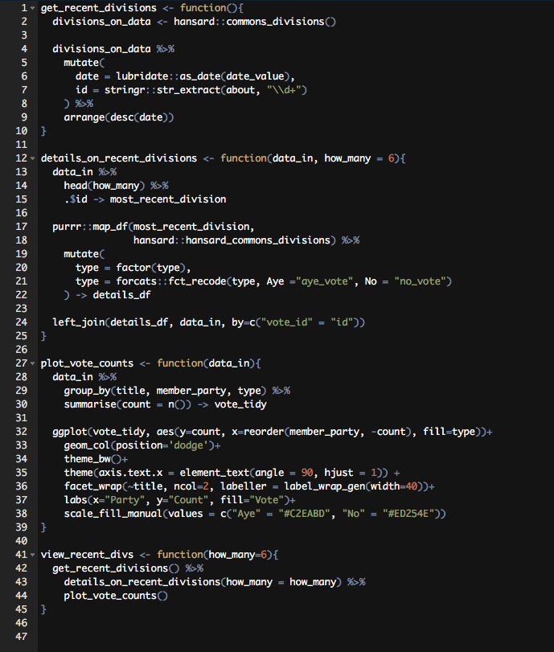
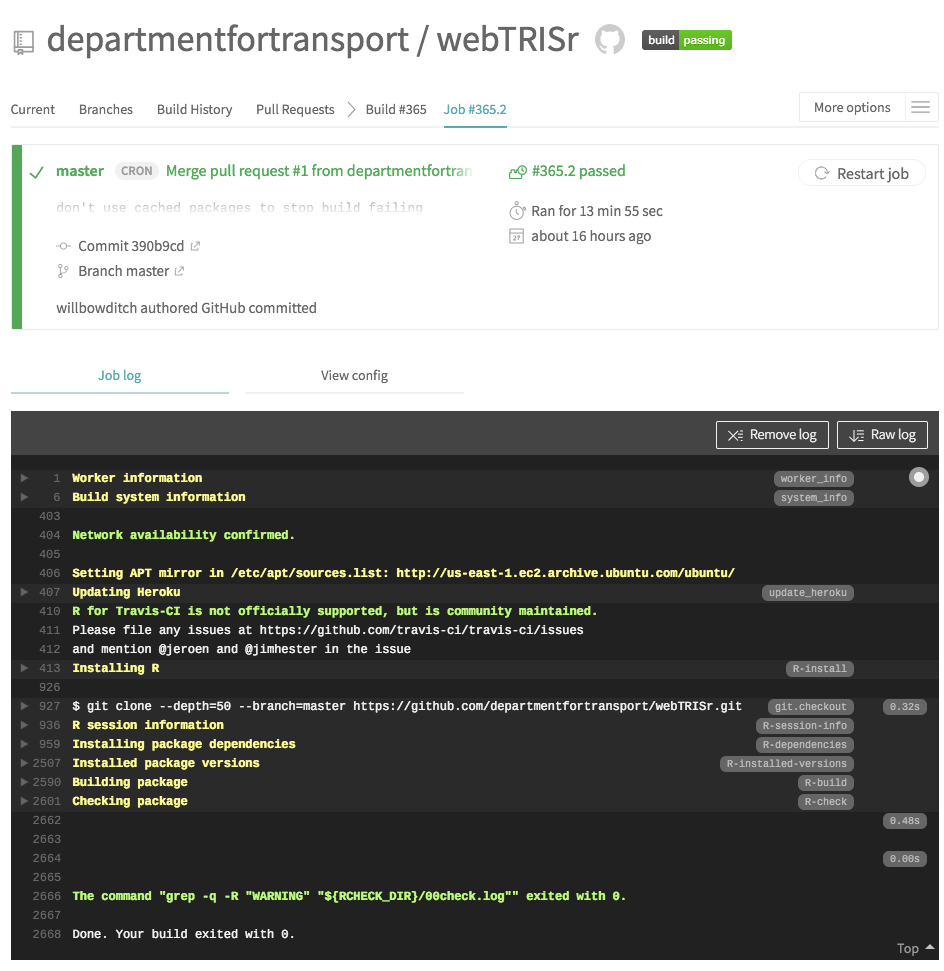

Software Development Tools for Analysts using R
Will Bowditch
- As analysts we care about getting the right answer, so the code needs to be correct and maintainable
Writing code can lead to lots of avoidable mistakes. There are a whole bunch of tools and practices from software development that can help to prevent them.
- The session will focus on R tools, but the same or similar tools are available in most languages
We won’t cover how to use them in depth, but why you should use them, and where to find more information.
Version Control and Collaboration 🤝
This might look familiar:
Analysis.R
Analysis_v2.R
Analysis_final.R
Analysis_finalfinal.R
- The problem becomes greater when you have multiple people working on the same file
- What happens if two users save two different versions at the same time?
Git
git is the most popular version control system, which simply tracks how code changes over time.- Code can be restored to any point in time and can be tagged
- (e.g. this is the version of the code used for release 2018)
- Who made the changes and why is recorded
- Working on the code at the same time is facilitated with ‘branches’ and ‘merges’
- If something breaks,
git has a number of tools to find out where the break occurred and revert to a previous version if necessary
git is the client, GitHub is a repository hosting service.
Resources

- Master is the ‘stable’ branch of the code, the version that is used to produce the final output of a publication, for example.
- Versions are tagged (here with version numbers), so you know which version of the code was used for a particular task.
- Features are worked on in a separate branch and these features are integrated into a development branch (a work in progress)
Example git commit log

Note that every change to the code includes, who made it, and when is recorded.
Example git difference log
How the code has changed is recorded at a granular level.
Here the spelling of MMSI is the only change - but complex changes are recorded in the same way

GitHub
- GitHub advocates a particular way to work using
git, called ‘Git Flow’.
- The main addition is pull requests, which is simply a stage where others look at the changes you are proposing to introduce and can discuss them before they are merged.
- This is where QA should happen.
https://guides.github.com/introduction/flow/

R Packages 📦
In R, the fundamental unit of shareable code is the package. A package bundles together code, data, documentation, and tests, and is easy to share with others.
I’m going to try and persuade you that writing packages is worth the extra effort in the long run.
Everything you need to know about writing packages is here: http://r-pkgs.had.co.nz/
Scripts vs. Packages
Most people start off writing scripts, a common convention is to do something like this:
01_Read_data.R
02_Process.R
03_Plot.R
This is good for quick projects, but prevents you from using a lot of the tools designed to make writing maintainable R code easy.
Errors in R
Q: What happens if a statement fails part way through a script?
# A tibble: 7 x 11
manufacturer model displ year cyl trans drv cty hwy fl class
<chr> <chr> <dbl> <int> <int> <chr> <chr> <int> <int> <chr> <chr>
1 volkswagen passat 1.8 1999 4 manual(m5) f 21 29 p midsize
2 volkswagen passat 1.8 1999 4 auto(l5) f 18 29 p midsize
3 volkswagen passat 2 2008 4 auto(s6) f 19 28 p midsize
A: In some (interactive) situations, R will print out an error and continue merrily on.
This is obvious if you run the code line-by-line, but not if you have a large script and run the whole thing (as is often the case).
Solution: Packages of Functions
Write packages of functions - a function that fails will always stop the execution.
Error in filterz(., model == "passat") :
could not find function "filterz"
Modular code
Scripts can get long and unruly quickly. If well commented you can find which sections do what, but a script that is 100s of lines long is never going to be easy to read.
For example, if you want to change part of a graph produced somewhere in the script - you’re going to have to scan through a lot of text.


Instead, here we know view_recent_divs() is the main function of the package, and it’s obvious that the plotting is handled in the plot_vote_counts() function.
There’s also a shortcut to jump between functions in R-Studio

Functions also encourage you to generalise the problem using parameters. Writing generalised functions is usually good as you are more likely to be able to use them again.
Function documentation
R has a framework for documenting functions and managing exports: roxygen2.

On build this becomes part of the documentation.
So running ?details_on_recent_divisions brings up:

- Packages have a
DESCRIPTION file, that contains information for the package.
Explicit function calls
This is a good idea in your scripts too.
- One of the problems with R is that package imports are not explicit (unlike,
python for example)
- When you issue
require(dplyr) all of the functions from dplyr are brought into the ‘namespace’
- What happens if you have two packages with the same function name? Which one will R choose?
- It depends on the order of your
require statements, but the real solution is to use explicit function calls.
Instead of using require() or library() use explicit function calls:
This is very verbose, but does mean you will always be calling the correct function.
Packrat: Saving package versions with
- Another problem is keeping the exact packages you used to produce a piece of analysis.
- For a analysis to be reproducible, you need to make sure the environment remains the same
Check on status of packrat:
You can save all the versions you’ve used by:
Resource
http://rstudio.github.io/packrat/
Tests, style, & automation 🤖
- Going to go through some tools that help you write good code, test the code, and automate the whole process.
- If packages are used, implementing these tools is very straightforward.
The lintR package
Good coding style is like using correct punctuation. You can manage without it, but it sure makes things easier to read. http://r-pkgs.had.co.nz/style.html
- It’s hard to keep these in mind when writing code. The more you follow them, the better you’ll get at using them from the start.
- The
lintR package checks scripts and packages for style errors and (some) actual code errors, like bad imports.
Unit tests: testthat
One of the best ways to make sure your code does what you think it does it to write tests.
Tests are typically separated into unit tests and integration tests.
- Unit tests - check individual sections of code
- Integration tests - check that different units of code work together
Here’s a simple unit test:
An example integration test might take some raw data and check the final output matches a known output (like last years figures).
Code Coverage: covr

- Reports how much of your code is checked by tests.
- Not everything will need a check, but a good number to aim for is >75%.
The goodpractice package
- This only works on packages, but automatically checks for a lot of common mistakes and encourages good practices (lintR and covR are run as part of this)
Continuous Integration and Development
- All of the above steps should be run on any code that is changed before it is merged into the ‘master version’
- This can be quite time consuming:
- get the code ➡️ load up R ➡️ run test tests ➡️ see if they pass ➡️ repeat as needed 🔁
- CI/CD tools aim to do this for you and most of them plugin to to GitHub.
- For example, you can setup rules, that all tests must pass before code can be added into the master version.
- You can also use them to check if your package will work with new versions of packages and R
- Travis is free for open source projects: https://docs.travis-ci.com/user/languages/r/
